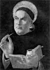

Orta Çağ’ın en etkili teologlarından biri olarak kabul edilen Aziz Aquinaslı Thomas (1225-1274), Roma yakınlarındaki Roccasecca kasabasında babasına ait bir kalede dünyaya geldi. Aristokrat bir İtalyan ailesinin çocuğuydu. Babası onu henüz küçük yaştayken dini eğitim alması için bir manastıra gönderdi.

Ne var ki Aquinas 19 yaşında babasının isteğine karşı gelerek manastırdan kaçtı ve Paris Üniversitesi’ne gitti. Yoldayken babasının adamları tarafından kaçırıldı. Onu İtalya’da kalmaya ikna edebileceklerini düşünüyorlardı. Yaklaşık bir yıl kadar esaret altında kaldı. Bu süreçte onu kararından vazgeçiremeyen ailesi en sonunda üniversiteye yazılmasına izin vermek zorunda kaldı.
Aquinas, yaklaşık elli yıl önce Sen Nehri kıyısında kurulmuş olan Paris Üniversitesi’nde canlı bir entelektüel ortamla karşılaştı. Burası İtalya’da kaçtığı geleneksel feodal yapıdan çok farklıydı. Etrafındaki insanlar kısa süre önce Hıristiyan Avrupa tarafından yeniden keşfedilen Antik Yunan filozofu Aristo’nun (MÖ 384-322) eserlerinin çevirileri karşısında büyülenmişti.
Aristo felsefesi, rasyonalizm ve bilime yaptığı vurgu ile yaygın Hıristiyan inançları için ciddi bir tehlike sunuyordu. Bu düşüncelerin önemli bir bölümü, Aquinas’ın yazılarının da temelini oluşturacaktı. 1526 yılında teoloji mastırını tamamladı. Hemen ardından iki ünlü kitabı olan Summa contra Gentiles (1264) ve Summa Theologiae üzerinde çalışmaya başladı. İkincisini tamamlamaya ömrü yetmeyecekti.
Kitaplarında inanç ve akıl arasındaki ilişkiyi inceliyor, Aristo’nun sorduğu sorulara yanıtlar bulmaya çalışıyordu. Kimi gelenekselci teologlar Aquinas’ın düşüncelerini dine karşı bir tehdit olarak algıladılar. Aquinas ise Aristo’nun eleştirel aklını kullanarak dinin daha derin bir şekilde kavranılabileceğine inanıyordu. Teolojiye bir bilim gibi yaklaşılabilirdi. Summa Theologiae, Tanrı’nın varlığına ilişkin beş argüman ortaya koydu. Bu fikirler daha sonra yaygın bir kitle tarafından benimsenecekti.
1272 yılında memleketine döndü. Napoli Üniversitesi’nde çalışmaya başladı. Papa 10. Gregory (1210-1276) tarafından Paris’te bir konferansa çağrıldı. Ancak hastalandı ve yolda öldü. 1323 yılında aziz ilan edilmiş ve 1567 yılında Kilise Doktoru olarak kabul edilmiştir. Kilise Doktorluğu Katolik teologlara verilen en üst rütbedir.
Ek Bilgiler
1- Aquinas Katolik okullarının koruyucu azizi olarak kabul edilmektedir. Dünyanın her yerinde onun adıyla açılmış okullar bulunmaktadır.
2- Katolik bilginlerin Aquinas’ın teolojisini benimsemesi uzun yıllar almıştır. Aslına bakılırsa ölümünden üç yıl sonra Paris piskoposu tarafından aforoz edilmiştir.
3- Paris’te Aquinas’ın öğretmenlerinden birisi de Alman filozof Albertus Magnus’tu (1200-1280). O da bir Kilise Doktoru olarak kabul edilmektedir.